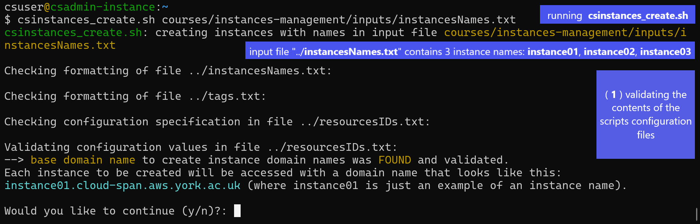
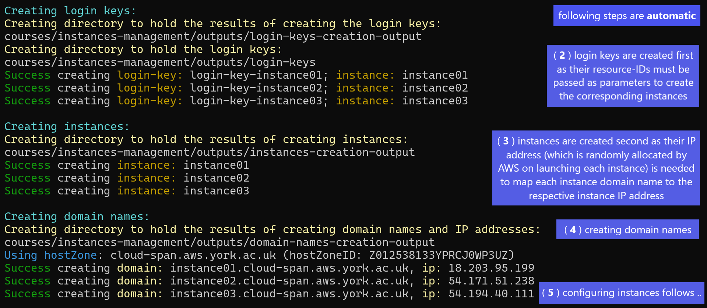
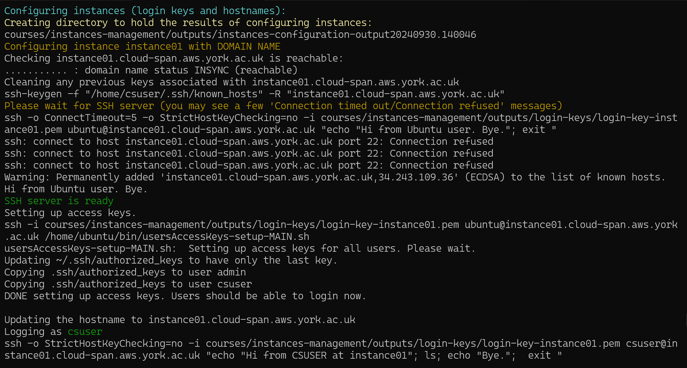
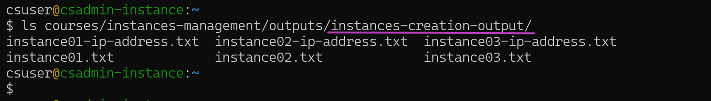

Instances Management Tasks Using the Scripts
Please read Workshops Organisation if you haven’t done so.
If you are attending a workshop using a Cloud-SPAN AWS account, you will be given the necessary information at the workshop.
If you are self-studying the course or attending a workshop using your AWS account, you will need:
- to have created your AWS account as described in episode Create Your AWS Account.
- to have configured your AWS account as described in episode Configure Your AWS Account.
- to have configured your terminal environment as described in either of these episodes:
- to have configured instances internet access as described in episode Configure Instances Internet Access to get your:
- host zone (base domain name) and host-zone-id —— OPTIONAL (read the Overview of that episode).
- security-group-id
- subnet-id —— OPTIONAL (idem.)
- the AWS Console login details of your IAM user account: login page, username and password.
Overview
This episode will guide you through the main tasks involved in creating and managing AWS instances for a course/workshop, including: configuring the Scripts, running the Scripts, and auxiliary tasks such as managing worshop cancellations and troubleshooting.
Sections
The Scripts Running Environment
This section introduces the Scripts, the directory-file structure the Scripts require to run successfully, and the constraints you need to observe in configuring and running the Scripts.Configure the Scripts Running Environment
You will create a running environment for the Scripts within your terminal environment: a Git Bash terminal, a Linux terminal, a Mac terminal or the AWS CloudShell terminal. You will create the directory-file structure that will enable the Scripts to manage a few AWS instances.Create the Instances
You will create the instances specified in Section 2 and this will generate some results. The results generated and displayed to the terminal by the Scripts that create AWS resources (instances, login key files, etc.) will be explained to help you understand how the Scripts work.Check the Instances Are Accessible
Once instances are created, it is convenient to check that they are accessible throughsshby logging in to a few of them. This section will show you how to login to instances in a way easier than usingsshdirectly.Understand the Results of Creating Instances
Creating AWS resources involves making AWS requests that return back results that are saved to files within the Scripts running environment. These files are crucial for the successful operation of the Scripts in stopping, starting and eventually deleting the created resources. These files are explained in this section to round up your understanding of how the Scripts work.Typical Instances Life Cycle: create, stop, start and delete instances
This section describes the typical use-case scenario of instances management for a workshop /course. It describes our approach to instances management using both the terminal and the AWS Console. This section also describes how to create instances in two steps in order to reduce costs when deploying relatively large instances in terms of storage.Unforeseen Instance Management
This section describes our approach to handle unforeseen instance management requests such as creating additional instances for a workshop due to late registrations, or deleting some (not all) instances before the end of a workshop due to cancellations.Troubleshooting
This section presents some problems we have come across in managing instances and how to solve them.
1. The Scripts Running Environment
These are Scripts that create and manage AWS instances
Listing
aws_domainNames_create.sh aws_instances_terminate.sh csinstances_create.sh
aws_domainNames_delete.sh aws_loginKeyPair_create.sh csinstances_delete.sh
aws_instances_configure.sh aws_loginKeyPair_delete.sh csinstances_start.sh
aws_instances_launch.sh colour_utils_functions.sh csinstances_stop.shThe four scripts csinstances_*.sh (on the right) are to be run by the admin user of the Scripts, the person in charge of creating, configuring, stopping, starting and deleting AWS instances for a workshop /course. The scripts aws_*.sh are invoked by the scripts csinstances_create.sh or csinstances_delete.sh to either create or delete instances and related resources, that is: domain names, IP addresses, and login keys.
The file colours_utils_functions.sh provides (is “sourced” by) the other scripts with text colouring functions (for the results of the other scripts to be easier to read) and utility functions that validate the invocation and results of the other scripts.
File-directory structure to manage instances for workshops
You have configured your AWS account and terminal environment as described in the previous episodes. Now, prior to creating instances for a workshop, you must create and organise three files as follows:
instancesNamesFile.txt — contains the names of the instances to be created and managed. Only the name of this file can be changed if preferred. This file must contain only one instance name per line, and each instance name must start with an alphabetic character followed by alpha-numeric characters, hyphens (-) or underscores (_) only.
resourcesIDs.txt— contains a set of space-separated “key value” pairs that specify the AWS resources to use in creating each instance and related resources. This is the contents of theresourcesIDs.txtfile we use to create instances for the Cloud-SPAN Genomics course:resourcesIDs.txt for Cloud-SPAN Genomics course
KEYWORD VALUE examples (Cloud-SPAN's for Genomics course using domain names) ## NB: "key value" pairs can be specified in any order imageId ami-07172f26233528178 ## NOT optional: instance template (AMI) .. instanceType t3.small ## NOT optional: processor count, memory .. securityGroupId sg-0771b67fde13b3899 ## NOT optional: should allow ssh (port 22) subnetId subnet-00ff8cd3b7407dc83 ## optional: search vpc in AWS console & .. hostZone cloud-span.aws.york.ac.uk ## optional: specify to use domain names hostZoneId Z012538133YPRCJ0WP3UZ ## optional: specify to use domain namesAs shown in this example, a
resourcesIDs.txtfile can have comments in addition to the “key value” pairs to specify. The “key value” pairs can be specified in any order, but each key word must be the first item in a line and its corresponding value the second item in the same line. The key words in the example must be used, but they are NON-case sensitive. The three not optional “key value” pairs must be specified.The values are all validated. The value of
imageIdis validated to correspond to an AMI in the user’s AWS account or to a public AMI available in the AWS region on which the scripts are running. The value ofinstanceTypeis validated to be a valid AWS instance type. The values ofsecurityGroupId,subnetId,hostZoneandhostZoneIdare validated to exist in the user’s AWS account.The key word
subnetIdand its value are optional. If not specified, the scripts will try to obtain a subnetID from the user’s AWS account. We have successfully tested the scripts to obtain and use a subnetID running the scripts with a personal AWS account and with an institutional AWS account. If the scripts cannot obtain a subnet-id, they will display a message describing how to obtain a subnet-id (see section Select an AWS Subnet to Access the Instances). If you are using an AWS institutional account, you may need to contact your IT department — AWS allocates default subnets to each account but these may have been changed by your IT department.The keywords
hostZoneandhostZoneIdand their values are optional. If specified and valid, each instance will be accessed using a domain name such as the following:instance01.cloud-span.aws.york.ac.uk, whereinstance01is an example of a specified instance name andcloud-span.aws.york.ac.ukis the base domain name (hostZone) in this example. IfhostZoneandhostZoneIdand their values are not specified, each instance will be accessed using the public IP address or the generic domain name allocated by AWS, which will look like the following:34.245.22.106orec2-34-245-22-106.eu-west-1.compute.amazonaws.com.tags.txt— contains a set of space-separated “key value” pairs to tag instances and related resources upon creation. This file is optional. If specified, it must contain only one “key value” pair per line. Up to 10 “key value” pairs are processed. Examples:tags.txt - Cloud-SPAN
group BIOL project cloud-span status prod pushed_by manual
The three files (instancesNamesFile.txt, resourcesIDs.txt and tags.txt) must be placed (or created) inside a directory called inputs, and the inputs directory must be placed inside within at least one other directory whose name you can choose, and to which we refer to as Workshop Environment (WE). We use this directory structure to manage instances for our workshops:
Listing
courses ### you can omit this directory or use other name
genomics01 ### workshop/course WE name; you can use other name
inputs ### you CANNOT use other name
instancesNames.txt ### you can use other name
resourcesIDs.txt ### you CANNOT use other name
tags.txt ### you CANNOT use other name
outputs ### created automatically by the Scripts - do not modify
genomics02 ### another WE: inputs and outputs directories inside
metagenomics01 ### another WE: inputs and outputs directories insideWe handle a courses directory that contains a WE directory for each course /workshop that we run, for example: genomics01, genomics02, metagenomics01, etc. Each course directory has its inputs directory and inside the three three files mentioned above: instancesNames.txt, resourcesIDs.txt, and tags.txt (note that we are using this style for file/directory names you can choose and this style for file/directory names you cannot change).
You must create the directory structure above, or a similar one, and those three files before running the Scripts to create the instances for a course.
The outputs directory inside each WE directory is created automatically by the Scripts to save the results of running the Scripts.
How to run the Scripts — overview and constraints
To run any of the Scripts you only need to pass the name of your file instancesNames.txt as a parameter to the script you want to run.
The Scripts can access the files resourcesIDs.txt and tags.txt based on the location of instancesNames.txt.
Assuming the directory structure and file names above, the script csinstances_create.sh should be run as shown in these two code boxes (see notes below):
Code
csuser@csadmin-instance:~
$ csinstances_create.sh courses/genomics01/inputs/instancesNames.txt
... ### RESULTS Code
csuser@csadmin-instance:~
$ cd courses/
csuser@csadmin-instance:~/courses
$ csinstances_create.sh genomics01/inputs/instancesNames.txt
... ### RESULTS In the code boxes:
- we are showing our terminal prompt to highlight the current working directory from which
csinstances_create.shis being run. - our shell prompt is configured to use two lines, displaying
csuser@csadmin-instance: working-dirin the first line, and the dollar sign$on its own on the second line. - the courses directory was created at the home (
~) directory - in the first code box, you are running
csinstances_create.shwhile being in the home directory; hence the file name (relative path) that you must pass tocsinstances_create.shiscourses/genomics01/inputs/instancesNames.txt - in the second code box, you are first moving to the courses directory with the command
cd; hence the file name (relative path) that you must pass tocsinstances_create.shisgenomics01/inputs/instancesNames.txt
DON’T RUN the Scripts with a relative path that does not include the name of the “course/workshop” WE directory — they will fail
Following the code examples above, you should not move into the genomics01 directory and run the scripts as shown below:
Code
csuser@csadmin-instance:~/courses
$ cd genomics01/
csuser@csadmin-instance:~/courses/genomics01
$ csinstances_create.sh inputs/instancesNames.txt
... ### FAILURE RESULTSHowever, the following will work:
Code
csuser@csadmin-instance:~/courses/genomics01
$ csinstances_create.sh ../genomics01/inputs/instancesNames.txt
$ csinstances_create.sh ~/courses/genomics01/inputs/instancesNames.txt The reason to force the specification of the “course/workshop” WE directory name in running the Scripts is to prevent (reduce the likelihood of) running the Scripts in the wrong place, which can happen when you are managing instances for different courses or test runs at the same time.
Running the other Scripts:
All the Scripts are run in the same way, passing as parameter the name of your file instancesNames.txt as shown below:
Code
$ csinstances_stop.sh genomics01/inputs/instancesNames.txt
$ csinstances_start.sh genomics01/inputs/instancesNames.txt
$ csinstances_delete genomics01/inputs/instancesNames.txt
$ aws_domainNames_create.sh genomics01/inputs/instancesNames.txt
..
$ aws_loginKeyPair_delete.sh genomics01/inputs/instancesNames.txt While the scripts aws_*.sh are meant to be run (invoked) only by the scripts csinstances_*.sh, running the scripts aws_*.sh directly by the user may be useful for improving them or fixing a failed step in creating multiple instances, as will be discussed later in the section Troubleshooting below.
2. Configure the Scripts Running Environment
This and the subsequent sections are hands-on. In this section you are going to configure the Scripts running environment for a sample course. You will use this environment in subsequent sections to create and manage instances. In this section you are going to:
- create the workshop environment (WE) directory structure
courses/instances-management/inputsat the home directory - create the three configuration files: instancesNames.txt,
resourcesIDs.txtandtags.txt - configure the AWS CLI (command line interface) — if you are attending a workshop using a Cloud-SPAN AWS account
While you can choose a different name for the file instancesNames.txt and for the parent directories of the inputs directory, for this course we recommend that you use the names suggested as otherwise you will have to adapt the intructions below.
Create the WE directory structure
Open your (Git Bash, Linux, Mac, or AWS CloudShell) terminal where you installed the Scripts.
Being at the home directory (~), type the mkdir command below and press Enter to create the directory structure:
Code
csuser@csadmin-instance:~
$ mkdir -p courses/instances-management/inputsThe option -p (or --parents) tells mkdir to create parent directories as needed, and not to complain if any of those directories exist.
Check the contents of each file
Let’s list the files you copied:
Code
csuser@csadmin-instance:~
$ ls courses/instances-management/inputs/Output
instancesNames.txt resourcesIDs.txt tags.txtRemember that the tags.txt file is optional but we use one throughout the examples in the course.
Let’s look now at the contents of each file so you can later relate the inputs to the outputs of the Scripts.
instancesNames.txt
The contents of the file instancesNames.txt you copied is shown below. We are going to create three instances with the names: instance01, instance02, instance03. We don’t need to create more instances to learn how to use the Scripts. We have used the Scripts to create up to 37 instances in one go in about 15 minutes.
Code
csuser@csadmin-instance:~
$ cat courses/instances-management/inputs/instancesNames.txt Output
instance01
instance02
instance03resourcesIDs.txt
The contents of the file resourcesIDs.txt you copied is shown below. It contains the AWS resources to use in creating instances and related resources, which means that each instance will be:
- a copy of the Amazon Machine Image (AMI) whose
imageIDisami-00c0ea23e53f48472 - running on an
instanceType(virtual machine hardware)t3.small - using the security configuration whose securityGroupId is
sg-07fde18971b673b39 - etc.
Code
csuser@csadmin-instance:~
$ cat courses/instances-management/inputs/resourcesIDs.txt Output
imageId ami-00c0ea23e53f48472
instanceType t3.small
securityGroupId sg-07fde18971b673b39
subnetId subnet-00f3dc83b7407df8c
hostZone cloud-span.aws.york.ac.uk
hostZoneId Z012538133CJ0WPYPR3UZ Recall that the AWS resources specified in a resourcesIDs.txt file are all validated. The value of imageId is validated to correspond either to an AMI in your AWS account or to a public AMI available in the AWS region on which the scripts are running — the imageID value in the listing above corresponds to a public Cloud-SPAN AMI of size 30 GB available in the eu-west-1 (Ireland) region. The value of instanceType is validated to be a valid AWS instance type: t3.small in the listing above corresponds to an instance with 2 processors (vCPUs) and 2 Giga Bytes of main memory.
The values of securityGroupId, subnetId, hostZone, and hostZoneId are validated to exist in the AWS account you are using to invoke the Scripts.
Edit the file resourcesIDs.txt or configure the AWS CLI
Because the values of securityGroupId, subnetId, hostZone, and hostZoneId must exist in the AWS account you are using to invoke the Scripts, if you are self-studying the course or attending a workshop using your AWS account, you must edit the last four lines in that resourcesIDs.txt file as described within the bar “Edit resourcesIDs.txt — if you are using your AWS account” below.
If you are attending a workshop using a Cloud-SPAN AWS account, the values of securityGroupId, etc. are valid for the Cloud-SPAN account you are using. However you need to configure the AWS CLI installed in your AWS instance as described in the within the bar “Configure the AWS CLI — if you are .. using a Cloud-SPAN AWS account” below.
resourcesIDs.txt if you are using your AWS account
What you need to edit:
You need to edit the lines that correspond to securityGroupId, subnetId, hostZone and hostZoneId as follows:
securityGroupId— change the value (second field in the line) with the value of your security group id.subnetId— change the value with the value of your subnet id — or, delete this line and let the Scripts obtain a subnet id automatically.hostZone— change the value with the value of your host zone (domain name) — or, delete this line and let the scripts create instances without domain names.hostZoneId— change the value with the value of your host zone id — or, delete this line and let the scripts create instances without domain names.
You need to change the values of both hostZone and hostZoneId, or delete the two containing lines.
Editing the file resourcesIDs.txt
You need to use a plain-text editor such as nano, vim, emacs, etc., to update the file resourcesIDs.txt so that no special characters get into the file which may cause the Scripts to fail.
The editors nano and vim are available both in the Git Bash terminal and the AWS CloudShell terminal.
If you are using the AWS CloudShell terminal, you can download the file to your machine and edit it there with your preferred plain text editor, and upload it back to your AWS CloudShell enviroment. The screenshot below shows the menu to download and upload files:

The AWS CLI (command line interface) is a software tool that enables you to interact with AWS through commands that can be run either on a terminal or within shell scripts.
The Scripts invoke /run the AWS CLI to make requests to manage (create, allocate, …, and delete) AWS services such as instances, storage, etc. For such requests to be successful, the AWS CLI must be configured to use an AWS account.
The AWS instance provided to you by the Cloud-SPAN team has already installed the Scripts and the AWS CLI, but the AWS CLI is not configured yet for security reasons.
To configure the AWS CLI in your instance, run the command aws configure as shown below:
Code
csuser@csadmin-instance:~
$ aws configureThe following four prompts will be displayed, one at a time:
aws configure prompts
AWS Access Key ID []:
AWS Secret Access Key []:
Default region name []:
Default output format []:Please wait for the workshop instructor to give you the data values to enter to each prompt.
Once you have entered the fourth value, the AWS CLI in your instance will be ready to use. Then, check the configuration by running the following command:
Code
aws ec2 get-vpn-connection-device-typesIf your configuration is correct, you should see an output like this:
Output
{
"VpnConnectionDeviceTypes": [
{
"VpnConnectionDeviceTypeId": "36ef5d04",
"Vendor": "Barracuda",
"Platform": "NextGen Firewall F-Series",
"Software": "6.2+"
},
...If instead you see an authorisation failure message like the one below, your configuration is not right. Run aws configure again and check that you properly copy-paste the values you were given.
Output
An error occurred (AuthFailure) when calling the GetVpnConnectionDeviceTypes operation: AWS was not able to validate the provided access credentials3. Create the Instances
To create the instances specified in the previous section, you only need to run csinstances_create.sh as shown below while being at the home directory (use the Tab key to complete the names of the script, the directories and the file):
Code
csuser@csadmin-instance:~
$ csinstances_create.sh courses/instances-management/inputs/instancesNames.txt Once you press Enter the output you will see in your terminal will be like the one in the screenshot below:
Creating instances involves five or four steps depending on whether domain names to access instances are to be managed or not:
Validating the contents of the Scripts configuration files: instancesNames.txt,
tags.txt(if found), andresourcesIDs.txt. The validation is as described above and outlined in the screenshot below. The filestags.txtandresourcesIDs.txtare accessed by the Scripts based on the path of the file instancesName.txt passed as a parameter. If no problem is found in these files, the option to continue with the configuration detected, regarding managing or not managing domain names to access instances, is displayed for the user to confirm or cancel the run.
If there is a problem a problem in any of the files, messages (not shown in the screenshot) are displayed to specify the specific problem/s in each file and the run is aborted.
In the screenshot above, the configuration detected corresponds to managing domain names to access instances; that is,
hostZoneandhostZoneIdand valid values were specified in theresourcesIDs.txtfile and found to be valid.
IfhostZoneandhostZoneIdare not specified, the option to continue looks like this:
Option message to continue with no domain names
--> NO base domain name was FOUND. Each instance to be created will be accessed with the IP address or the generic domain name provided by AWS, which look like this: 34.245.22.106 or ec2-34-245-22-106.eu-west-1.compute.amazonaws.com. Would you like to continue (y/n)?:Now Type
yand pressEnterto continue with steps 2, 3 and 4, which are shown in the screenshot below.Creating the login keys. Login keys are created first because their resource ID’s must be passed as parameters to create the corresponding instances.
Creating the instances, each configured to use one of the login keys created in the previous step. When an instance is created (launched for the first time), or started after having been stopped, AWS randomly allocates an IP address to the instance. The IP address of each instance is used in step 4 below if domain names are to be managed.
Creating the instance domain names as mapped to the respective instance IP addresses — this step is only run if
hostZone,hostZoneIdand valid values are specified in theresourcesIDs.txtfile.
Configuring each instance, both to enable the
csuseraccount (used by workshop participants) to be logged in and to change the instance host name to the instance name used to create the instance (the default host name is the instance IP address), see notes below.
- a newly created instance can only be accessed through the
ubuntuuser account. It is the only account that is enabled to be logged in by the AWS service that launches instances. When an instance runs (boots) for the first time, that service adds the public key part of the login key created to access the instance to the file/home/ubuntu/.ssh/authorized_keys. Thereafter, the private key part of the login key can be used withsshto access theubuntuaccount. To enable thecsuseraccount to be logged in in each instance, this configuring step runs a Bash script in theubuntuaccount (in each instance) that copies that file (../authorized_keys) to thecsuseraccount in/home/csuser/.ssh/authorized_keys. - the default “host name” of a newly created instance is its IP address. As such, the terminal prompt when accessing an instance with
sshlooks like this:csuser@52.212.13.253:~ $andubuntu@52.212.13.253:~ $. This configuring step changes the default host name to the instance domain name (or the instance name if domain names are not being managed) through remotely invoking on each instance the commandsudo hostnamectl set-hostname "instance-domain-name"(or “instance-name” if domain names are not being managed). Thereafter, the terminal prompt when accessing an instance withsshlooks like this:csuser@instance01:~ $andubuntu@instance01.cloud-span.aws.york.ac.uk:~ $.
- a newly created instance can only be accessed through the
Steps 2, 3, 4, and 5 are respectively performed by the scripts aws_loginKeyPair_create.sh, aws_instances_launch.sh, aws_domainNames_create.sh, and aws_instances_configure.sh. The script csinstances_create.sh invokes those scripts after validating the Scripts configuration files (step 1).
Those scripts display to the terminal only part of the results of creating or configuring the relevant resources, and save all of those results to files in the outputs directory, as described below.
4. Check the Instances Are Accessible
You should now be able to login to the instances you just created. It is convenient to login to a few of the instances that you create for a course to verify that they are reachable, and hence everything went as expected.
You can login to an instance as shown in the introduction to this lesson, running ssh specifying the login key with the -i (identity file) option, the csuser, and the instance domain name or instance IP address, that is:
Code
$ ssh -i login-key-instance01.pem csuser@instance01.cloud-span.aws.york.ac.uk
### or
$ ssh -i login-key-instance01.pem csuser@52.212.13.253However, using ssh as shown above is adequate for the end user of each instance who will be using the same ssh command to access the same instance throughout a course, while being at the directory where the login key file has been stored.
As the admin user of the Scripts that manage multiple instances, at times managing two or more courses or tests simultaneously, you need to be able to login to different instances more easily.
Use lginstance.sh to login to instances
The script lginstance.sh will help you login to instances more easiyly — it was downloaded into your environment along with the Scripts. It is used specifying only the instance login key file and the user account to login to, either csuser or ubuntu — both users use the same login key files. Assuming the configuration files used above, and being at the home directory, logging into instance01 would be thus:
Code
csuser@csadmin-instance:~
$ lginstance.sh courses/instances-management/outputs/login-keys/login-key-instance01.pem csuser
lginstance.sh: logging you thus: ### this and the next line are displayed by lginstance.sh
ssh -i courses/instances-management/outputs/login-keys/login-key-instance01.pem csuser@instance01.cloud-span.aws.york.ac.uk
### Welcome message from instance01
csuser@instance01:∼ ### instance01 promptlginstance.sh builds the ssh command you need to login to an instance and runs it. The login keys are in the directory ~/courses/instances-management/outputs/login-keys/, so you need to specify the relative path (from your current working directory) to the corresponding login key file.
That long command is rather easy to enter using the Tab key for the shell to complete the name of the script lginstance.sh, the names of the intermediate directories and the name of the login key .pem file. Try it.
What we found would get on the way (before developing lginstance.sh) was specifying the pair user@instance-domain-name (csuser@instance01.cloud-span.aws.york.ac.uk) because the shell cannot help you complete it using the Tab key (because it only complets command names and file names).
lginstance.sh works the same using or not using domain names
If you are not using domain names, as admin user you can still use lginstance the same way, specifying the instance login key file and the user account to login, but lginstance will use the instance IP address (as opposed to the instance domain name) to log you in, as shown below:
Code
csuser@csadmin-instance:~
$ lginstance.sh courses/instances-management/outputs/login-keys/login-key-instance01.pem csuser
lginstance.sh: logging you thus: ### this and the next line are displayed by lginstance.sh
ssh -i courses/instances-management/outputs/login-keys/login-key-instance01.pem csuser@3.253.59.74
### Welcome message from instance01
csuser@instance01:∼ ### instance01 promptIf domain names are being managed, lginstance.sh extracts the base domain name from the file ../inputs/resourcesIDs.txt and prepends the instance name to create the domain name of the instance to login. Otherwise, lginstance.sh gets the instance IP address by querying AWS using the instanceId stored in the instance creation results file described in the next section.
Not using domain names = workshop participants use IP addresses
If domain names are not being used, workshop participants will need to use the IP address of their instances to login. Hence, admin users need to know where the IP address of each instance is stored, which is covered in the next section, under IP addressess for workshop participants.
Note that whether domain names are managed or not, the shell prompt of each instance is the instance name specified to create the instance. Thus, if an instance needs some troubleshooting, the workshop participant can specify the instance name, and the admin user can use lginstance.sh to login to the instance based on the instance name (and not the instance IP address).
5. Understand the Results of Creating Instances
The various results of creating instances shown in the screenshots above, and other results, are saved to files in the outputs directory. The outputs directory and its content are created by the Scripts as needed, within the workshop environment (WE) directory being used, in our running example ~/courses/instances-management/.
Run the ls command below to list the contents of the outputs directory:
Code
csuser@csadmin-instance:~
$ ls courses/instances-management/outputs/The output of the ls command should be the list of sub-directories (in brown) in the screenshot below — only the date and time at the end of the directory name instances-configuration-output20240930.140046 will be different in your output:

Results files in the outputs directory — managing domain names
Each of the Scripts that creates or configures AWS resources sends requests to AWS. AWS validates and performs each request if it is valid, and sends back the result of the request wich states whether the request was successful or not, and if successful, the resource ID of the created resource or configuration requested along with other pieces of information.
Each of the Scripts that makes such requests creates a sub-directory within the outputs directory to save the results of each request, to a file whose name has, as a sub-string, the name of the relevant instance as specified in the input file instancesNames.txt that you use to create the instances.
The files that were created for the above run of csinstances_create.sh are shown in the screenshot below — use the same ls commands in the screenshot to list the files in each sub-directory within your outputs directory. If you used the instances names we suggested to create the instances, the files created by your run of csinstances_create.sh should have the same names as in the screenshot:

Each instance name is the key to access each instance results files in the outputs directory
Once an AWS resource is created, any further request on the resource to, for example, configure it, stop it, .., or delete it, must include the resource ID received when the resource was created.
The naming convention of the results files mentioned above, that is, to include the name of the corresponding instance in each results file name, enables the Scripts to identify the files related to each instance to extract the resource IDs in order to further manage an instance and its related resources (login key, domain name), through making the corresponding requests to AWS.
The Scripts get the instances names to build the corresponding results files names from the instancesNames.txt received as a parameter (recall that all the Scripts are run in the same way).
The screenshot below shows the resource ID of instance01 that is extracted by the Scritps to further manage the instance. Login keys IDs look like this: "KeyPairId": "key-04b589569b2952ed2".

Results files in the outputs directory — NOT managing domain names
IP addressess for workshop participants
When domain names are not managed:
- the sub-directory
domain-names-creation-outputis not created. - the sub-directory
instances-creation-outputis used to store a file for each created instance that contains the IP address allocated by AWS to the instance. The name of each file is “instance-name-ip-address.txt”, where “instance-name” is the name of the instance as specified in the instancesNames.txt file used to run the Scripts.
If the three instances created in our running example had been created with no domain names, the files in the subdirectory instances-creation-output would be the ones shown in the screenshot below:

In the screenshot, the files “instance??.txt” are created by the script aws_instances_launch.sh; the files “instance??-ip-address.txt” are created by the script aws_instances_configure.sh. This is because an instance public IP address is not available in the results from invoking aws_instances_launch.sh (that is, in the files “instance??.txt”), but is available until each instance is actually running, a condition that the script aws_instances_configure.sh waits for and detects in order to recover each instance IP address to start configuring the instance, and finally save the IP address into the file “instanceName-ip-address.txt”.
Note that, if instances are stopped and eventually started, through running csinstances_stop.sh and csinstances_start.sh, the IP address of each instance will change because AWS randomly allocates IP addresses when instances are launched for the first time or when they are started after having been stopped. Therefore, csinstances_start.sh overwrites the contents of the files “instanceName*-ip-address.txt” with the newly allocated IP addresses.
6. Typical Instances Life Cycle: create, stop, start and delete instances
When you create instances through running csinstances_create.sh, the instances and their related resources (login key files, etc.) are created and configured first; then the instances are run (launched/started) and are left running until you either stop them or delete them.
Our typical scenario in managing instances is as follows. When a workshop is scheduled for delivery, say on day D, we usually send the workshop participants the instructions to login to their instances, along with their login key file, one or a few days before D. We usually follow these steps:
- create the instances before D for the login key files to be created.
- stop the instances shortly after (within minutes) to reduce costs.
- re-start the instances again some time before the workshop starts.
- delete all the instances once the workshop is over.
We perform those four tasks running the Scripts csinstances_*.sh in our terminal:
csinstances_create.shcsinstances_stop.shcsinstances_start.shcsinstances_delete.sh
But we are usually logged in to the AWS Console too, at the EC2 — Instances page, to check that the instances state changes according to the state intended by each script, as described below.
Follow along:
- login to the AWS Console (with your IAM user account), type EC2 (for Elastic Compute Cloud) in the AWS search box at the top and press Enter, and then click on Instances on the left menu pane, see the page below.
- run the scripts below in your terminal
Creating instances one or more days before a workshop starts
Only run csinstances_create.sh if you did not run it in the previous section!!!
Code
csuser@csadmin-instance:~
$ csinstances_create.sh courses/instances-management/inputs/instancesNames.txt Once you have run csinstances_create.sh, the instances state in the AWS Console will be Running as shown below (you may need to refresh the page):

Once the instances are created, you will be able to send the instances login details to workshop participants, that is: the login key files and either the instance domain names or the instance IP addresses (if domain names are not being managed).
The login key files are in the directory ../outputs/login-keys/ (within your courses/workshop-name directory — in our running example the instances-management directory). We usually upload the login-keys directory to a shared GDrive directory and inform someone we have done so. Someone then emails each login key file and the corresponding instance domain name to each workshop participant. Instance domain names are all saved to a GDrive file which is generated as described below.
If domain names are being managed:
Cloud-SPAN courses are run using instance domain names. The files ../outputs/domain-names-creation-output/domain-name-create-instancename?..?.txt contain each the domain name of an instance in the last line. However, we create a file containing all the domain names through (1) making a copy of the instancesNames.txt file used to create the instances, and (2) editing the file to append each line (instance name) with the base domain name in the resourcesIDs.txt file (cloud-span.aws.york.ac.uk in our running example). We then upload this file to a shared GDrive directory and inform someone we have done so, etc.
If domain names are NOT being managed:
The files ../outupts/instances-creation-output/instancename?..?-ip-address.txt contain each the IP address of an instance only. Cloud-SPAN does not follow not using domain names, but we would copy all these files to another directory and upload this directory, along with login keys files directory, to a GDrive directory and inform someone we have done so. Someone could then email each workshop participant the corresponding login key file and instanceName-ip-address.txt file as attachments. It should be easy to identify each pair of these files as their names contain the corresponding instance name.
Please note: if you are not managing domain names, you may NOT want to stop and start the instances as suggested above and shown below, but rather to delay creating instances as much as possible until just before the start of a workshop. If you stop and start the instances, their IP address will change and you will need to email the new IP addresses to workshop participants again. Creating 30 instances takes only 10 to 15 minutes. The issue is preparing the login details of each instance (login key and IP address files) to email them to each workshop participant.
Stopping the instances shortly after (within minutes) they are created
Code
csuser@csadmin-instance:~
$ csinstances_stop.sh courses/instances-management/inputs/instancesNames.txt Output
csinstances_stop.sh is stopping instances specified in input file courses/instances-management/inputs/instancesNames.txt
Stopping instances:
Creating directory to hold the results of stopping instances:
courses/instances-management/outputs/instances-stop-output20241018.131032
Success stopping instance: instance01
Success deleting domain: instance01.cloud-span.aws.york.ac.uk ip: 52.49.100.76
Success stopping instance: instance02
Success deleting domain: instance02.cloud-span.aws.york.ac.uk ip: 54.217.178.245
Success stopping instance: instance03
Success deleting domain: instance03.cloud-span.aws.york.ac.uk ip: 34.252.179.148Once you run csinstances_stop.sh, the instances state in the AWS Console will change from Running to Stopping as shown below, and after a short while the state will change to Stopped, and will remain so until you run another script that changes the state of the instances.

Note in the output of csinstances_stop.sh that each instance domain name is deleted after stopping each instance. This is done because as mentioned above the IP address of each instance will change on re-starting each instance. Hence there is no reason to keep instance domain names that are mapped to IP addresses that are invalid as a result of having stopped the corresponding instances.
Re-starting the instances just before the workshop
Code
csuser@csadmin-instance:~
$ csinstances_start.sh courses/instances-management/inputs/instancesNames.txt Output
csinstances_start.sh is starting instances specified in input file courses/instances-management/inputs/instancesNames.txt
Starting instances:
Creating directory to hold the results of starting instances:
courses/instances-management/outputs/instances-start-output20241018.131906
Success starting instance: instance01
Success starting instance: instance02
Success starting instance: instance03
Checking each instance is running to get its IP address:
.- instance instance01 state 16 (running)
Please note: the IP address (52.210.84.174) of instance instance01 was saved to the file:
courses/instances-management/outputs/instances-creation-output/instance01-ip-address.txt
..- instance instance02 state 16 (running)
Please note: the IP address (34.241.237.54) of instance instance02 was saved to the file:
courses/instances-management/outputs/instances-creation-output/instance02-ip-address.txt
..- instance instance03 state 16 (running)
Please note: the IP address (63.35.198.137) of instance instance03 was saved to the file:
courses/instances-management/outputs/instances-creation-output/instance03-ip-address.txt
Mapping each instance domain name to its IP address:
Success mapping domain: instance01.cloud-span.aws.york.ac.uk, ip: 52.210.84.174
ssh-keygen -f /home/csuser/.ssh/known_hosts -R instance01.cloud-span.aws.york.ac.uk
# Host instance01.cloud-span.aws.york.ac.uk found: line 26
/home/csuser/.ssh/known_hosts updated.
Original contents retained as /home/csuser/.ssh/known_hosts.old
Success mapping domain: instance02.cloud-span.aws.york.ac.uk, ip: 34.241.237.54
ssh-keygen -f /home/csuser/.ssh/known_hosts -R instance02.cloud-span.aws.york.ac.uk
# Host instance02.cloud-span.aws.york.ac.uk found: line 27
/home/csuser/.ssh/known_hosts updated.
Original contents retained as /home/csuser/.ssh/known_hosts.old
Success mapping domain: instance03.cloud-span.aws.york.ac.uk, ip: 63.35.198.137
ssh-keygen -f /home/csuser/.ssh/known_hosts -R instance03.cloud-span.aws.york.ac.uk
# Host instance03.cloud-span.aws.york.ac.uk found: line 28
/home/csuser/.ssh/known_hosts updated.
Original contents retained as /home/csuser/.ssh/known_hosts.old
Checking each domain is reachable:
.......... : instance01.cloud-span.aws.york.ac.uk status INSYNC (reachable)
. : instance02.cloud-span.aws.york.ac.uk status INSYNC (reachable)
. : instance03.cloud-span.aws.york.ac.uk status INSYNC (reachable)
Please note: you may need to wait up to one hour to be able to access re-started
instances with "ssh". This is because Domain Name servers ask every hour for changes
to the configuration of instance domain names and IP addresses have just changed.Once you run csinstances_start.sh, the instances state in the AWS Console will change from Stopped to Pending (momentarily), and then to Running and will remain so until you run another script that changes the instances state.
Note in the output of csinstances_start.sh that all instances are started first. Instance IP addresses are then saved each to the file ../outputs/instances-creation-output/instanceName-ip-address.txt. If domain names are not being managed, csinstances_start.sh will finish at this point. Otherwise, if domain names are being managed, csinstances_start.sh will create each instance domain name as mapped to the new IP address of each instance, and will wait (check) until each domain name status is INSYNC (reachable).
Please note the message in the last paragraph of the output of csinstances_start.sh which is self-explanatory. (If domain names are not being managed, instances can be accessed with ssh immediately after their IP addresses have been saved.)
Deleting instances and related resources once a workshop is over
Code
csuser@csadmin-instance:~
$ csinstances_delete.sh courses/instances-management/inputs/instancesNames.txt Output
csinstances_delete.sh is terminating instances specified in input file courses/instances-management/inputs/instancesNames.txt
Terminating instances:
Creating directory to hold the results of deleting instances:
courses/instances-management/outputs/instances-delete-output20241018.154603
Success terminating instance: instance01
Success terminating instance: instance02
Success terminating instance: instance03
Deleting login key pairs:
Creating directory to hold the results of deleting the login keys:
courses/instances-management/outputs/login-keys-delete-output20241018.154607
Success deleting login-key: login-key-instance01; instance: instance01
Success deleting login-key: login-key-instance02; instance: instance02
Success deleting login-key: login-key-instance03; instance: instance03
Deleting domain names:
Creating directory to hold the results of deleting domain names:
courses/instances-management/outputs/domain-names-delete-output20241018.154610
Success deleting domain: instance01.cloud-span.aws.york.ac.uk ip: 52.210.84.174
Success deleting domain: instance02.cloud-span.aws.york.ac.uk ip: 34.241.237.54
Success deleting domain: instance03.cloud-span.aws.york.ac.uk ip: 63.35.198.137You can delete instances in any state — you don’t need to stop instances to delete them.
Once you run csinstances_delete.sh, the instances state in the AWS Console will change from Stopped, or Running, to Shutting-down, and after some minutes to Terminated, and after some more minutes the terminated instances will no longer be shown in the AWS Console.
The output of csinstances_delete.sh shows these main steps:
- Terminating instances
- Deleting login key pairs
- Deleting domain names
You should always see a Success … message for each resource that is terminated or deleted. If you don’t, you are probably running the Scripts in the wrong directory or with the wrong instancesNames.txt file. The Scripts have not failed since we got them right.
The results of stopping, starting and deleting instances are also saved to files
The results of running csinstances_stop.sh, csinstances_start.sh and csinstances_delete.sh are also saved within sub-directories in the ../outputs/ directory.
Run the ls command below to look at the sub-directories that were created after running those scripts.
Code
csuser@csadmin-instance:~
$ ls courses/instances-management/outputs/The output of ls should be similar to this one:

The newly created sub-directories are those in boxes; their names are suffixed with the date and time when the relevant script was run. Inside each sub-directory there is a file for each request made by the relevant script, one request for each instance or related resource.
We won’t look into these files. Their main use is to register the results of AWS requests in case of errors happening. They were essential while developing the Scripts to get them right.
7. Unforseen Instance Management
The Scripts use-case scenario outlined above is typical of short workshops that last 1-4 days in a row. Yet sometimes it doesn’t go that smoothly. Sometimes you will receive requests like those in the list below after you have both created an “instancesNamesFile” and run the script csinstances_create.sh with that file, that is: some instances have been created, and then, you receive requests like:
- can you create N more instances? — We received N last-minute registrations to the workshop.
- can you delete instance A? — The participant is ill and cancelled.
- can you leave the instances B and C running after the workshop until date? — The participants have not yet managed to cover the course but are very keen to do it.
- can you stop instance D (don’t delete it) until further notice? — The participant has started the workshop but something urgent happened and will get back to it asap.
If you are to fulfill such requests, you need to manage multiple “instancesNamesFile”s. You cannot use a single “instancesNamesFile” because the Scripts create (configure, stop, start or delete) all the instances whose names you specify in the “instancesNamesFile” you pass to the Scripts.
For example, suppose the following scenario: (1) you have created the three instances as instructed in Section 3 Create the Instances — you used the file instancesNames.txt to create three instances with the names instance01, instance02, and instance03; (2) you are then asked to create another instance (for a latecomer to the workshop you are running); and (3) for the new instance you decide to use the name instance04.
Now you need to create another “instancesNamesFile”, say, instancesNames-04.txt, that contains only the instance name instance04, and then run csinstances_create.sh instancesNames-04.txt.
Avoid modifying an “instancesNamesFile” that you have already used to create intances
In the example above, you should not add the instance name instance04 to the file instancesNames.txt (that you previously used to create instances01, ..02 and ..03), and then run again:
csinstances_create.sh instancesNames.txt — it will fail as shown in the screenshot below:

The Scripts check instance operations are valid given the state of the running environment
Recall (from Section 3 Create the Instances) that login keys are created first, then instances, etc. Login keys are created by the script aws_loginKeyPair_create.sh which, as you can see in the screenshot above, first checks whether the login key files for the instances to be created exist or not, aborting its execution if any such file exists. In the run shown in the screenshot, aws_loginKeyPair_create.sh found the login key files for instances01, ..02, and ..03, and hence displayed the message shown and aborted its execution which, in turn, caused csinstances_create.sh to abort its execution as well.
As stated in that message, the files that were found contain the AWS resource IDs of login keys already created. Those resource IDs are needed to delete the login keys from your AWS account. The Scripts do not overwrite files that contain such resources IDs. If those files are overwritten, or lost, before you delete the corresponding instances and related resources (running csinstances_delete.sh), you will need to use the AWS Console to delete manually the corresponding instances, login keys, IP addresses and domain names.
If you want to create instances with names you have already used, you must first delete the instances already created and their related resources (running csinstances_delete.sh), then delete or rename the ../outputs/ directory, and finally create the instances. We have done so only for some testing, see the Troubleshooting section.
All the Scripts that create AWS resources carry out a similar check to that carried out by aws_loginKeyPair_create.sh. For each instance name in the “instancesNamesFile” passed to csinstances_create.sh, each script checks whether the instance, or the resource for that instance, has been created or not, which amounts to checking whether the file with the corresponding AWS resource ID exists or not. If any such file does exist, the script aborts its execution without issuing any AWS request to create resources.
All the Scripts that delete AWS resources carry out a similar check but act on the opposite. … If any such file does not exist, the script aborts its execution without issuing any AWS request to delete resources. The script aws_instances_configure.sh does this check.
Given a set of instances names as specified in an “instancesNamesFile”, the two checks above guarantee that all or none of the instances, and/or related resources, are created or deleted.
Finally, all the Scripts aws_*.sh check that the “instancesNamesFile” passed to them has only one value (one instance name) in each line. Thus, if you inadvertently passed to the Scripts the file name resourcesIDs.txt or tags.txt, which both have two values in each line, the Scripts will abort their execution.
Using multiple “instanceNamesFile”s to manage unforseen instances management requests
There is no problem with having multiple “instancesNamesFile”s in an ../inputs/ directory.
The main issue is how to name those multiple files so that you keep track of what happens, regarding instance management throughout a workshop.
The listing below illustrates the naming convention we follow to name multiple “instancesNamesFile”s to handle similar requests to the ones described in the introduction to this section.
The listing shows the files in the inputs directory of a workshop we ran through late October and November 2022:
Output
instancesNames20221028-create-301-25.txt
instancesNames20221031-create-326.txt
instancesNames20221031-create-327.txt
instancesNames20221031-create-328.txt
instancesNames20221101-create-329.txt
instancesNames20221109-delete-307.txt
instancesNames20221114-delete-303,315,321.txt
instancesNames20221115-create-again-321.txt
instancesNames20221121-delete-310,314,320,321,323,325.txt
instancesNames20221123-stop-306.txt
instancesNames20221128-delete-302,304-05,308-09,311-13,316-19,322,324,326-29.txt
instancesNames20221130-delete-301.txt
resourcesIDs.txt
tags.txtThe workshop used instances of type t3.2xlarge, each instance with 8 processors and 32 GigaBytes of main memory and 240 GB of secondary storage — not cheap. The instances were to run for 4 weeks unless the participants would not make progress which we checked weekly looking at the command history and whether relevant results files existed. We would delete instances that showed no progress was made.
From the file listing above we can recall the following:
- On 28 October we created the 1st file at the top and run
csinstances_create.sh courses/../inputs/instancesNames20221028-create-301-25.txtin order to create 25 instances named: instance301, instance302, instance303, …, instance325. - On 31 October we received 3 requests, at different times, to create one more instance. Upon receiving each request, we created another “instanceNameFile” (2nd, 3rd and 4th files in listing above) with only one instance name inside (instance326, instance327, instance328 respectively), and run
csinstances_create.shwith each file. - On 1 Novemeber we received another request to create one more instance and handled it as just described to create instance329.
- On 9 November we deleted instance307 (for not showing progress):
- we made a copy of instancesNames20221028-create-301-25.txt onto instancesNames20221109-delete-307.txt.
- opened the copy with our text editor and deleted all lines except the line with the instance name instance307.
- we then run
csinstances_delete.sh courses/../inputs/instancesNames20221109-delete-307.txt.
The other “instancesNamesFile”s in the list were handled similarly to the way the event on 9 November was handled, namely:
- creating a new file containing only the names of the target instances.
- naming the file instancesNamesDate-operation-instancesNumbersList.txt — where operation is create, stop, start, or delete.
- running the relevant
csinstances_*.shscript to create, stop, start or delete the target instances.
The tedious part of this file naming convention is specifying the intancesNumbersList. However, it is not required often and it gives you an accurate overview of the instance operations you have performed for a workshop.
8. Troubleshooting
This last section presents the problems we have come across in creating instances with the Scripts and how we solved them. The problems are presented below under the error messages displayed when the problems occur, namely:
- Connection timed out or Connection refused messages persist
- WARNING: REMOTE HOST IDENTIFICATION HAS CHANGED
“Connection timed out” or “Connection refused” messages persist
Those messages are related to accessing an instance with ssh. We have come across those messages in two scenarios:
- when an instance is to be configured — recall that instance configuration is the last step in creating instances. We will refer to this scenario as During configuration scenario.
- and when an instance is to be accessed by the end user (after the instance has been configured). We will refer to this scenario as After configuration scenario.
During configuration scenario
This scenario is shown below. It has to do with the SSH server in the instance not yet being ready to accept any login request, and hence the client (the script aws_instances_configure.sh which is invoked last by csinstances_create.sh) receives an unsuccessful response and displays either the message Connection timed out or Connections refused, or both. This situation is normal because we know the instance has just been launched. It’s only a matter of waiting for the SSH server to be ready.

Note in the screenshot the message in brown “Please wait for SSH server (you may see a few ‘Connection timed out/Connection refused’ messages)”, and the message in white just below “ssh -o ConnectTimeout=5 -o StrictHostKeyChecking=no -i courses/…”. The script aws_instances_configure.sh prints those two messages and then gets into a loop to repeatedly issue that ssh command until it is successful. In the screenshot, three issues of that ssh command were unsuccessful and the message “ssh: connect to host instance01… port 22: Connection refused” was displayed three times. Once that ssh command is successful, aws_instances_configure.sh proceedes to issue the ssh commands that configures the instance. That is, the sole purpose of the ssh command that is issued within the loop is to ensure the SSH server in the instance is ready.
How many “Connection timed out/Connection refused” (unsuccessful ssh) messages would be “normal”?
We have seen up to about 15 of those messages and then ssh succeeds.
Sometimes it is network congestion during peak hours that will cause those messages — sometimes you will not see any of those messages.
Usually those messages will be displayed for the first instances to be configured and not for subsequent instances because the SSH server in subsequent instances has some more time to get ready.
However, an instance configuration step may indeed get stuck displaying those messages no end. It has happened to us under two conditions that we will call test conditions and normal conditions.
Test conditions
By test conditions we mean creating instances to test something (as opposed to creating instances for a workshop: normal conditions). In testing something, we have sometimes created a few instances and immediately after realised we forgot somethineg, corrected it, deleted the instances and created the instances again using the same instance names, and then got those messages no end.
We had to delete the instances, and create new ones with different names. We believe the problem is the too close subsequent requests to map the same domain names to different IP addresses. The AWS domain name system, Route 53, needs sometime to propagate the changes to its servers, etc. It has not been worth trying to solve this. They are only tests and we can use other instances names.
Normal conditions
Creating instances for a workshop is normal conditions. We have got those messages under normal conditions and the following has always worked for us:
abort the run of the script
csinstances_create.shby pressingCtrl-c(the keys Ctrl and c simultaneously) a few times until you get back the prompt of your terminal. You will be aborting the scriptaws_instances_configure.shfirst, the one that displays those messages, and then the scriptcsinstances_create.shwhich invokedaws_instances_configure.shas the last step of creating instances.
Note that, when you abort the Scripts while seeing the messages “Connection timed out” or “Connection refused”, the AWS resources of all instances have already been created. It is only the instances configuration phase that has not been completed.reboot the instance that got stuck in the configuration phase — the instance should be Running if all the previous steps were succesful (they should; check the messages displayed to your terminal). We usually reboot an instance in the AWS Console. Go to the EC2 - Instances page - check the box to the left of the instance name - click on Instances state drop-down menu at the top - select Reboot Instance.
wait a few minutes — even if the instance state changes to Running in the AWS Console: the SSH server needs to get ready.
run
aws_instances_configure.shas you rancsinstances_create.sh, for example:
Code
aws_instances_configure.sh courses/instances-management/inputs/instancesNames.txt - this run will configure all the instances specified in the file instancesNames.txt. There is no problem if some instances were previously configured (before aborting the Scripts) and are configured again.
- alternatively, you may want to deal only with the instance on which the configuration step got stuck. In this case you need to create another “instancesNamesFile” containing the name of that instance only and run
aws_instances_configure.shwith that file (see the previous section Unforseen instances management), for example:
Code
aws_instances_configure.sh courses/instances-management/inputs/instancesNames20241028-configure-10.txt - Alternatively, you may try first all of the steps above except rebooting the instance. It has worked for us. We believe the benefit of rebooting the instance is the cleaning/deleting of any previous
sshrequests enqueued somewhere waiting to be served.
After configuration scenario
The other scenario where Connection timed out or Connection refused messages may be displayed is when an instance is to be accessed by the end user (after the instance has been configured and is running).
In this case, it is the configuration of the server the end user is connected to gain access to the Internet. The server is blocking ssh communication, either from the end user ssh client to reach the instance or from the instance SSH server to reach the end user machine, or both. If you have a mobile phone handy, turn on the “Mobile Hotspot” WiFi, ask the end user to connect to it, and then to connect to the instance. If this works, the end user needs to ask the IT department responsible for the server to solve the issue.
WARNING: REMOTE HOST IDENTIFICATION HAS CHANGED
The error behind this message has also to do with accessing and instance with ssh. It used to happen to us and happened to a workshop participant whose instance was created, deleted and created again with the same name.
The participant was sent the login key file the first time the instance was created. We then deleted the instance (instance321 in the file listing in section Unforseen instance management due to not seeing any progress). The participant asked the instance to be created again. We created the instance again using the same name and send the participant the new login key file. When using ssh to login to the newly created instance, the participant got that message.
The solution was to tell the participant to run the command below before running ssh so that the instance host domain is removed from the participant’s ~/.ssh/known_hosts file.
Code
ssh-keygen -f "$HOME/.ssh/known_hosts" -R instance321.cloud-span.aws.york.ac.ukThe error used to happen to us when developing the Scripts out of carrying out multiple tests using the same instances names. So we decided to add that ssh-keygen command to the script aws_instances_configure.sh just before invoking ssh — see the screenshot above, eighth line from the top.